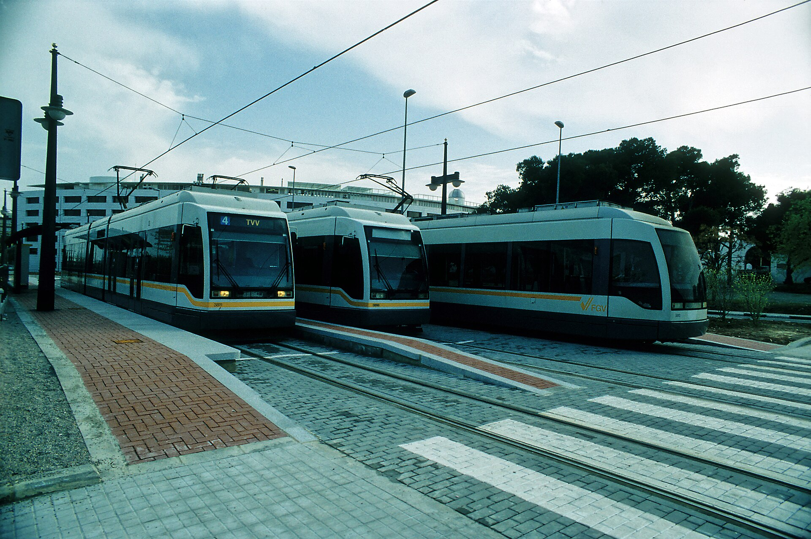
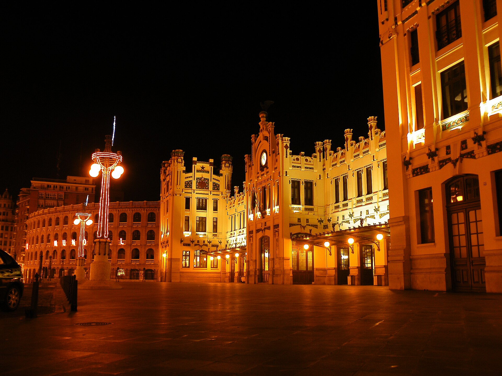

Voilà tout ce que j'ai accumulé comme adresses, liens et contacts. C'est pas exhaustif, c'est ce qui nous sert. Je mets à jour au fil de l'eau.
« Enregistre ces contacts dans ton téléphone tout de suite. Avec trois enfants, savoir que t'as ce filet, ça change tout. »
Florian · Boîte à outils Valencia🚨 Les numéros qui peuvent sauver
Enregistre ça dans ton téléphone tout de suite. Avec trois enfants, savoir que t'as ce filet, ça change tout.
Police, pompiers, ambulance (gratuit 24h/24)
Police d'État
Police municipale
Bomberos
SAMU espagnol
🏛️ Les services publics
- 🇫🇷 Consulat de France : C/ de la Nave, 3, 46003 Valencia. Consulat honoraire : pour les grosses démarches (passeport, CNI), direction Barcelone ou Madrid. Utile pour les premières infos et l'inscription au registre.
- 🏛️ Mairie de Valencia (Ayuntamiento) : Plaça de l'Ajuntament, 1. C'est là (ou aux Juntas Municipales de quartier) que tu fais ton empadronamiento. valencia.es
- 🛂 Oficina de Extranjería : C/ de la Democràcia, 77. Le NIE, c'est ici. Avec cita previa : te pointe pas sans.
- 💼 LABORA : Plusieurs bureaux. Inscription demandeur d'emploi, offres, formations. labora.gva.es
- 🏥 TGSS (Sécurité Sociale) : C/ del Pintor Sorolla, 7. Affiliation Sécu, numéro SSN. seg-social.gob.es
- 💰 Agencia Tributaria : C/ de la Justícia, 1. Déclaration fiscale, Modelo 030. agenciatributaria.gob.es
- 🚗 DGT (Permis de conduire) : C/ del Poeta Querol, 2. Enregistrement permis français. dgt.es
🏥 Les hôpitaux
Les trois principaux publics de Valencia :
- 🥇 Hospital Universitari i Politècnic La Fe : Av. Fernando Abril Martorell, 106. Le plus grand, le plus moderne, excellente pédiatrie. C'est là qu'on ira pour tout ce qui touche aux enfants. Rassurant.
- 🥈 Hospital Clínic Universitari : Av. Blasco Ibáñez, 17. Centre-ville, pratique.
- 🥉 Hospital General Universitari : C/ Tres Forques, 2. Sud de la ville, bonnes urgences.
- 🚨 Urgences : 112 pour tout. Ambulance, police, pompiers. Un seul numéro, gratuit, 24h/24, multilingue.
📋 Liens officiels pour les démarches
NIE et Extranjería :
- Formulaire EX-15 : extranjeros.inclusion.gob.es
- Cita previa : sede.administracionespublicas.gob.es
- Paiement tasa 790-012 : sede.policia.gob.es
- Portail Extranjería : extranjeros.inclusion.gob.es
Empadronamiento :
- Page officielle : valencia.es
- Cita previa : valencia.es/cita-previa
🔗 Sécu, Éducation, Emploi & Impôts
Sécu et santé :
- Affiliation TA.1 : seg-social.es
- Carte SIP : san.gva.es
- Siège électronique Sécu : sede.seg-social.gob.es
Éducation, Emploi & Impôts :
- Conselleria d'Educació : ceice.gva.es
- Portail admissions : telematricula.es
- LABORA : labora.gva.es
- InfoJobs : infojobs.net
- LinkedIn Espagne : linkedin.com
- Agencia Tributaria : agenciatributaria.gob.es
- Generalitat Valenciana : gva.es
🏦 Les banques
En ligne (ouvrables depuis la France) :
- N26 : IBAN dispo en 24h, appli top, pas besoin de NIE. Notre choix.
- Revolut : multi-devises, sans frais, bon pour les transferts.
Traditionnelles espagnoles :
- CaixaBank : réseau partout, agences nombreuses.
- BBVA : très bonne appli, conseillers jeunes et anglophones.
- Santander : solide, un peu plus « vieille école ».
💡 Mon conseil : commence par N26 pour l'arrivée (immédiat), puis ouvre un compte BBVA ou CaixaBank une fois sur place pour l'IBAN espagnol et les justificatifs locaux.
👥 Les réseaux d'expatriés français
- Français à Valence : Groupe Facebook (~5000 membres). Entraide, bons plans, questions admin. Rejoins-le avant de partir.
- Francophones de Valence : Facebook. Plus culturel et sorties.
- Valencia Expats : Facebook et Meetup. International, networking.
- UFE Valencia : ufe.org. Représentation locale, événements, conseils.
- Valencia Language Exchange : Meetup. Soirées d'échange linguistique. Parfait pour pratiquer.
- Valencia Tech Meetup : Meetup. Networking tech, conférences.
- Alliance Française de Valencia : afvalencia.com. Pour rencontrer des locaux francophiles.
📱 Les plates-formes du quotidien
- 🏠 Logement : Idealista : idealista.com (le leader). Fotocasa : fotocasa.es (alternative sérieuse). Habitaclia : habitaclia.com. Wallapop : wallapop.com (meubles et électroménager d'occasion).
- 🚇 Transport : Metrovalencia : metrovalencia.es. EMT Valencia : emtvalencia.es (bus). RENFE Cercanías : renfe.com (trains de banlieue).
- 💶 Coût de la vie : Numbeo : numbeo.com. Comparatif entre villes.
- 🎭 Tourisme : Visit Valencia : visitvalencia.com. Turisme CV : comunitatvalenciana.com.
🌐 Les sites officiels qui couvrent tout
- Portail administration espagnole : administracion.gob.es
- Expatriation côté France : service-public.fr
- Conseils aux voyageurs : diplomatie.gouv.fr
- Formulaires extranjería : extranjeros.inclusion.gob.es
- Portail de rendez-vous : sede.administracionespublicas.gob.es

🏖️
Se faire plaisir sans se ruiner
On parle tout le temps budget, loyers, coût de la vie. Mais vivre à Valencia, c'est avant tout KIFFER. Et devine quoi ? La plupart des trucs géniaux sont gratuits ou quasi gratuits.
Voilà mon guide perso, du dimanche farniente aux journées mémorables. Je te raconte comme si t'y étais.
🌳 Le Turia, ton jardin de 9 kilomètres
Un fleuve transformé en parc. Neuf kilomètres de verdure qui traversent la ville, du Bioparc jusqu'à la mer. C'est le Jardín del Turia. La meilleure décision urbanistique jamais prise à Valencia : détourner le fleuve après l'inondation de 1957 et transformer le lit en parc plutôt qu'en autoroute. Chapeau.
Tu loues des vélos (12-15 € l'heure, sièges enfants dispo), tu glisses sous les palmiers et les ponts historiques, entre aires de jeux et fontaines où les gamins pataugent.
Des dizaines d'aires de jeux. Ton seul problème : faire avancer les enfants sans qu'ils s'arrêtent tous les 200 mètres.
🏖️ La plage, le luxe gratuit
À Valencia, la mer est à 15 minutes du centre en tram. Pas une heure. 15 minutes et t'as les pieds dans l'eau.
- Malvarrosa : la plus connue. Sable doré, 1 km de promenade, bars à horchata.
- Las Arenas : un poil plus chic.
- Patacona (Alboraya) : ma préférée en famille. Plus calme, eau peu profonde, parfaite pour les petits.
Douches gratuites, postes de secours l'été, terrains de beach-volley. Pique-nique + serviettes = journée à 0 €. Ou presque : 3 € pour une horchata au kiosque face aux vagues.
🏛️ Le centre historique, musée à ciel ouvert
- 🛒 Mercado Central : Le plus grand marché couvert d'Europe. 8 000 m² de ferronnerie moderniste et de coupoles de verre. Le spectacle c'est les étals : jambons par centaines, fruits de mer sur glace, légumes inconnus. Entrée gratuite.
- 🏛️ La Lonja de la Seda : Juste en face, classée UNESCO. La salle des colonnes est une forêt de pierre torsadée. Les enfants lèvent la tête avec des « wooooow ». Gratuit. Combo parfait avec le marché.
- ⛪ Cathédrale et Miguelete : 207 marches. Ça grimpe. Mais en haut, tu domines toute la ville. 8 €. La chapelle du Saint Calice abriterait le vrai Graal. Rien que ça.
- 🏰 Tour Serranos : Porte médiévale, vue imprenable sur le Turia. Gratuite le dimanche. Les autres jours 2 €. Fonce en fin d'après-midi pour la lumière dorée.
🎨 Les musées gratos, oui oui
- Museu de Belles Arts : deuxième plus grand musée d'Espagne après le Prado. Velázquez, Goya, Sorolla. Gratuit TOUT LE TEMPS. 1h30, les enfants peuvent toucher des reproductions.
- Parc de Benicalap : labyrinthe végétal, jeux d'eau l'été, mini-ferme. Gratuit. Les gamins y passent l'après-midi.
🐬 Oceanogràfic : le jour où tes enfants te disent merci
Plus grand aquarium d'Europe. Les bâtiments blancs de Calatrava te mettent déjà une claque, et puis tu rentres. Le tunnel traverse un bassin de requins et de raies qui nagent au-dessus de ta tête. Les belugas dansent dans l'Arctique. Le bassin des méduses au néon est hypnotique.
- 💰 Prix : ~36 € adulte, 26 € enfant (4-12 ans), gratuit -4 ans
- ⏱️ Durée : 3-4 heures, arrive à l'ouverture (10h)
- 👨👩👧👦 Pack famille : offres combinées Oceanogràfic + Museu de les Ciències
- 💡 Bon plan : billets en ligne pour éviter la queue
🦁 Bioparc : un safari au milieu de la ville
Oublie les zoos avec des cages. Ici tu marches DANS l'habitat. Pas de barrières visibles : des rivières, des rochers, de la végétation qui te séparent des animaux. Tu tournes la tête et BAM, des gorilles à 5 mètres. Des lions dans la savane. Des lémuriens au-dessus de toi.
- 📍 Où : Av. Pío Baroja, 3 (Campanar)
- 💰 Prix : 28 € adulte, 22 € enfant
- ⏱️ Durée : 3-4 heures
- 🦅 Astuce : le spectacle des oiseaux à 11h30, aigles et vautours te frôlent la tête
🌅 L'Albufera : le coucher de soleil qui vaut le détour
20 minutes du centre en bus (ligne 25). Un lac immense entouré de rizières. Au coucher du soleil, l'eau devient orange, les flamants roses décollent. Balade en barque traditionnelle : 45 minutes, 5-6 € par personne.
Après, file à El Palmar, le berceau de la paella. Le riz vient des champs que tu viens de traverser. Paella valencienne authentique (poulet, lapin, haricots, PAS de fruits de mer). 15-20 €. Le dimanche midi c'est blindé de familles valenciennes : réserve ou arrive à 13h.
🏰 Les châteaux à portée de train
- 🏰 Xàtiva : Train Cercanías C2, 50 minutes. Un petit train touristique (3 €) te monte au château. Médiéval + renaissance, vue sur toute la vallée jusqu'à la mer. 2-3 heures. Prends le train de 9h, retour à 16h.
- 🏛️ Sagunto : 25 minutes en C2. Théâtre romain restauré (spectacles l'été) + château. Les deux gratuits. Combine en une matinée, mange un menu del día en ville (11-12 €).
🛶 Grottes & Peñíscola
- Les grottes de Sant Josep : 45 minutes au nord (voiture ou bus touristique). Barque sur une rivière souterraine, galeries éclairées, stalactites, eau cristalline. Les enfants sont scotchés. 12 € adulte, 7 € enfant. 45 minutes de navigation.
- Peñíscola : Game of Thrones en vrai : 1h20 de route, mais ça vaut le détour. Le château des Templiers sur un rocher dans la mer, décor de Meereen dans Game of Thrones. Vieille ville fortifiée en escargot jusqu'à une plage immense. Château 8-10 €. Midi : riz au resto du port. Soir : glace sur la promenade face au château illuminé.
🗺️ Un programme de 5 jours pour kiffer direct
Si tu débarques et que tu veux un plan qui claque sans te ruiner :
- Jour 1 : Le gratuit qui déchire : Matin : Turia jusqu'au Parc Gulliver. Après-midi : plage Malvarrosa.
- Jour 2 : Le jour « waouh » : Matin (10h-13h) : Oceanogràfic, fonce au tunnel des requins avant la foule. Après-midi : Museu de les Ciències.
- Jour 3 : La nature : Matin : Bioparc dès l'ouverture + spectacle des oiseaux 11h30. Après-midi : Mercado Central, La Lonja, glace.
- Jour 4 : L'échappée sauvage : Matin : Albufera, balade en barque vers 11h. Midi : paella à El Palmar. Après-midi : plage El Saler (dunes protégées).
- Jour 5 : Le château : Matin : Xàtiva (train 9h), château, pique-nique avec vue. Retour 15h. Fin d'après-midi : horchata à Santa Catalina, balade El Carmen.
✨ Les bons plans en vrac
- 🎫 Valencia Tourist Card : transport illimité + réducs musées. 15 €/24h, 25 €/72h. Oceanogràfic + Bioparc dans la même période, tu l'amortis.
- 🥤 L'horchata : boisson au souchet, sucrée, glacée, avec des fartons. Horchatería Santa Catalina (centre) ou Daniel (Alboraya). 4-5 €. Tu deviendras accro.
- 🌡️ Évite juillet-août en extérieur : 35-40°C. Les mois parfaits : mai-juin et septembre-octobre, 25-28°C, mer encore chaude.
- 🔥 Les Fallas (mars) : la ville explose de couleurs et de pétards. Plus grand festival de rue d'Espagne. Gratuit (sauf mascletàs). Bouchons d'oreilles pour les petits.
Cette page est vivante : je la mets à jour chaque fois que je découvre un nouveau contact, un nouveau spot. Si t'as des ressources à partager, envoie-les. Expat un jour, expat toujours.